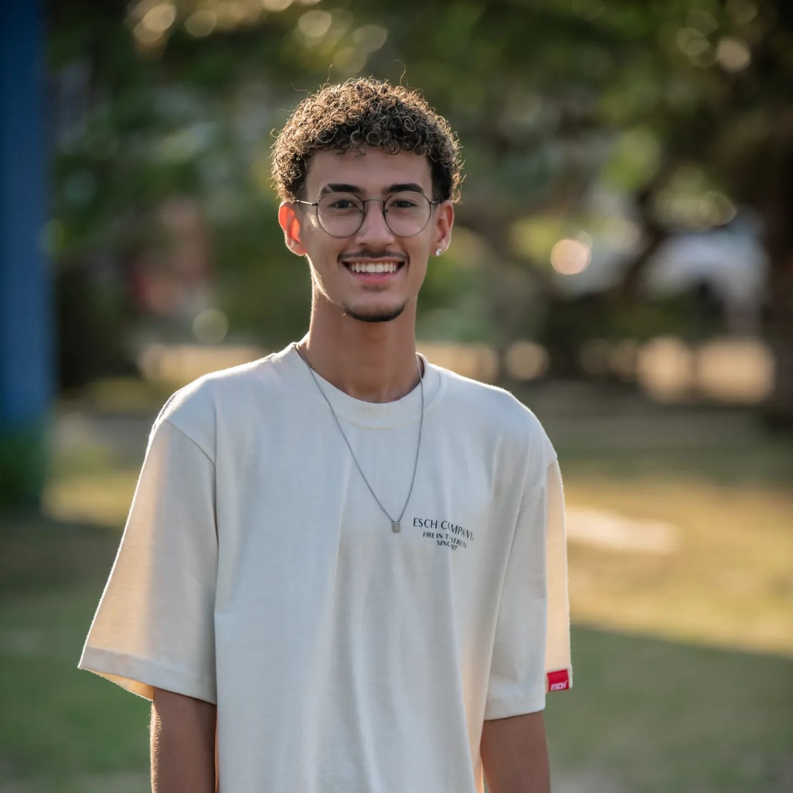

Currículo virtual
Gabriel Dornelas Assis da Silva

Olá, meu nome é Gabriel Dornelas, tenho 18 anos, atualmente cursando priemeiro periodo de ciências da computação
na Universidade de Vila Velha- UVV
Habilidades
- Trabalho em equipe
- Criativo
- Comunicativo
- Percistente
- Competitivo
Experiências com trabalho em equipe
-
Parcipação no grupo de escoteiro 07º Agenor de Souza Lé, durante 3 anos no perio de 2017 a 2019. no perio de
2018 a 2019 era o léder dos escoteiros do meu grupo.
-
Estudei na escola cooperativa alternativa lago dos cisnes
Redes sociais